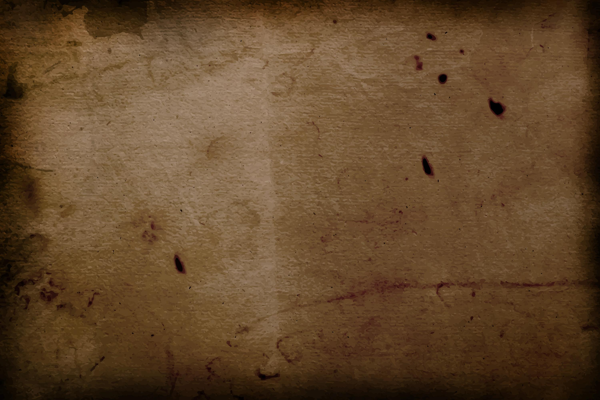

The Andrew Witcher 3 - Wild Hunt

The Witcher 3: Wild Hunt is the third and final installment in the series of games developed by CD PROJEKT RED featuring the witcher Geralt of Rivia. The game was originally scheduled for release in late 2014, then pushed back to 24 February 2015, and finally released on 19 May 2015.[3] During the first two weeks since release it had sold more than 4 million copies worldwide,[4] more than doubling the total sales of its predecessor, The Witcher 2: Assassins of Kings.[5]
Unlike the previous games, The Witcher 3 is set in a multi-region open world, featuring over 100 hours of content.[6] Several early articles mentioned that the developers planned to have an open world similar to that of Skyrim, but 20% larger.[7][8] The developers were quick to point out that while there was much to appreciate in Bethesda's open world concept, they were also making an effort not to repeat what they perceived as the flaws in-game. As with earlier games, the consequences of Geralt's actions will impact how the narrative progresses. The game has been built using the new REDengine 3 and was designed with player feedback from fans of previous Witcher games in mind.[9]